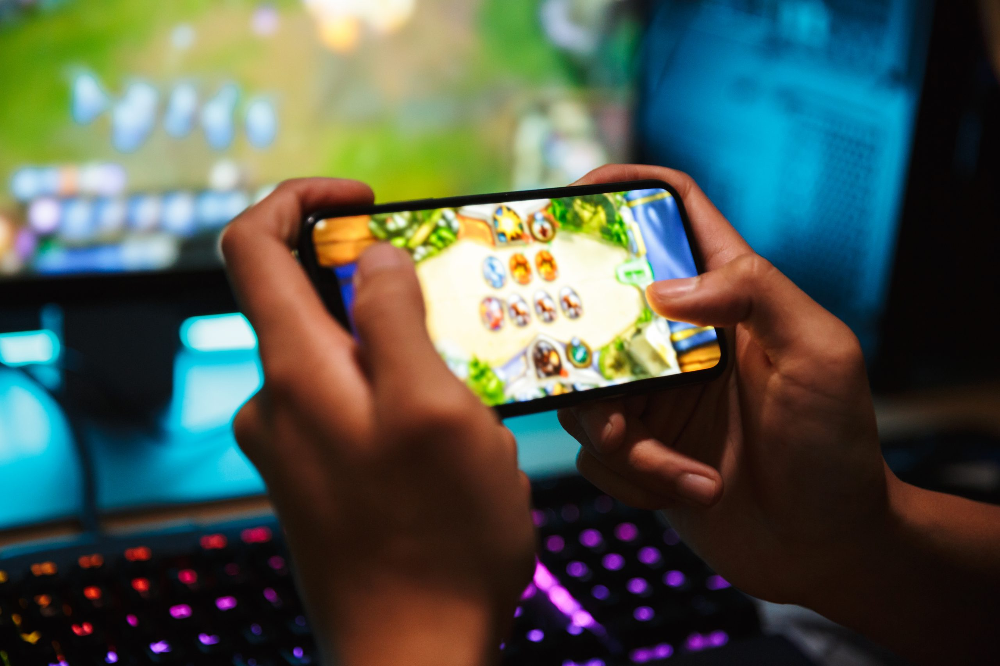

Are you a Gamer or are you a Player?
Which one are you?
What is a Player?
A Player is someone who participates in a game, sport, or other competitive activity. Players can be of any age, gender, or cultural background, and come from all walks of life. They may play games or engage in activities for fun, entertainment, or as a way to improve their skills and compete with others.
In the context of sports, players may belong to a team or play individually, depending on the sport or activity. They may have specific roles or positions within a team and work together to achieve a common goal, such as winning a game or tournament.
In the context of gaming, players may play solo or with others, competing against each other or working together as a team. They may play for fun or engage in competitive play, striving to improve their skills and achieve higher ranks or ratings.
Regardless of the activity, players often have a passion for what they do and enjoy the thrill of competition and the sense of accomplishment that comes with achieving their goals. They may develop strategies, train regularly, and work hard to improve their performance and achieve success.
What is a Gamer?

A Gamer is someone who enjoys playing video games as a form of entertainment, recreation, or even competition. Gamers can be of any age, gender, or cultural background, and come from all walks of life. They may play games on a variety of platforms, including consoles, computers, and mobile devices.
For many gamers, playing video games is a hobby that offers a way to unwind, relax, and escape from the stresses of everyday life. It can be a way to explore new worlds, solve puzzles, and engage with immersive storylines. Some gamers also enjoy playing games as a way to socialize with friends and connect with other like-minded individuals.
In recent years, gaming has become increasingly popular as a form of competitive sport, with professional gamers competing in tournaments for big cash prizes. This has led to the development of esports, which involves organized competitions with rules and regulations similar to traditional sports.
Gaming is a diverse and dynamic hobby that offers a wide range of experiences for those who enjoy it. Gamers are passionate about their hobby and often form communities and subcultures around the games they play.
Differences
The terms "Gamer" and "Player" are sometimes used interchangeably, they can have slightly different meanings depending on the context. Here are some possible differences:
- Focus: A gamer is someone who specifically enjoys playing video games, while a player may participate in a wider range of activities, such as sports, board games, or card games.
- Platform: A gamer typically plays video games on consoles, computers, or mobile devices, while a player may engage in a wider range of activities that may not involve technology.
- Competitive vs non-competitive: A player may participate in games or activities for fun, without necessarily trying to win or beat others, while a gamer may be more focused on competitive play and striving to improve their skills.
- Community: Gamers often form communities and subcultures around specific games, while players may have broader social networks that include people they engage with through various activities.
- Skill level: While both gamers and players may work to improve their skills and achieve success in their chosen activities, gamers may be more likely to track their progress and seek out training resources, such as tutorials or coaching.
These differences are not necessarily absolute and there can be overlap between the two terms. Ultimately, the terms "gamer" and "player" are simply different ways of describing people who enjoy playing games or participating in competitive activities.
The Mobile and Games Platforms

What is Mobile Platforms?
A mobile platform refers to the operating system or software framework that supports the development and running of applications on mobile devices such as smartphones and tablets. Examples of popular mobile platforms include iOS (used by Apple devices), Android (used by devices from various manufacturers), and Windows Mobile (used by Microsoft devices).
Mobile platforms provide a set of tools and APIs (Application Programming Interfaces) that developers can use to create applications that are optimized for mobile devices. These tools include features like touchscreens, mobile-friendly user interfaces, location-based services, and various sensors. Mobile platforms also provide app stores, which allow users to easily discover and download applications that are compatible with their device.
The choice of mobile platform can have significant implications for developers, as each platform has its own set of tools, guidelines, and programming languages. Developers must take into consideration the characteristics of the platform, such as the processing power, memory, and screen size, when designing and developing mobile applications. The goal is to create applications that provide a seamless user experience and take full advantage of the platform's capabilities.
There are several popular mobile platforms that are currently in use, including:
- Android: Android is a mobile operating system developed by Google. It is used by a wide range of mobile devices, including smartphones, tablets, and smartwatches. Android is open-source and is available on a variety of devices from different manufacturers. The platform is highly customizable and has a vast library of applications available through the Google Play Store.
- iOS: iOS is a mobile operating system developed by Apple. It is used exclusively on Apple's mobile devices, including the iPhone, iPad, and iPod Touch. iOS is known for its user-friendly interface and high-quality design. The platform has a large library of applications available through the Apple App Store.
- Windows Mobile: Windows Mobile is a mobile operating system developed by Microsoft. It is used on a range of mobile devices, including smartphones and tablets. The platform is designed to integrate with Microsoft's other products, such as Office and Skype. Windows Mobile has a smaller market share than Android and iOS, but still has a dedicated user base.
- BlackBerry OS: BlackBerry OS is a mobile operating system developed by BlackBerry Limited. It is used on BlackBerry's mobile devices, including smartphones and tablets. The platform is known for its security and privacy features, as well as its support for messaging and email.
- Tizen: Tizen is a mobile operating system developed by Samsung and Intel. It is used on a range of mobile devices, including smartphones and smartwatches. Tizen is designed to be highly customizable and has a focus on app and service discovery.
What is Game Platforms?
A game platform, sometimes also called a gaming platform, is a hardware or software framework designed to support the creation and running of video games. Game platforms come in various forms, including gaming consoles, personal computers, and mobile devices.
Gaming consoles, such as the PlayStation, Xbox, and Nintendo Switch, are dedicated gaming platforms that are specifically designed for playing video games. They typically offer high-end hardware and software that can provide a more immersive and satisfying gaming experience than other types of game platforms. Gaming consoles often come with proprietary software development kits (SDKs) and programming languages, as well as online services for multiplayer gaming and content distribution.
Personal computers (PCs) are another type of game platform that is popular among gamers. PCs offer a high level of flexibility and customization, allowing players to adjust hardware components, install specialized software, and modify game settings to suit their preferences. PC gaming platforms also provide access to a wide range of digital distribution platforms, including Steam, GOG, and Epic Games Store, where players can purchase and download games.
Finally, mobile devices, such as smartphones and tablets, are becoming increasingly popular as game platforms due to their widespread availability and advanced hardware capabilities. Mobile game platforms offer games that are optimized for small screens and touch-based inputs, and can be easily downloaded and played on-the-go. Mobile game development often involves the use of specialized software development kits and programming languages, as well as in-app purchases and advertisements as a means of monetization.
In summary, a game platform is a hardware or software framework designed to support the creation and playing of video games. Different types of game platforms offer unique features, advantages, and limitations, and the choice of platform can significantly impact game development and user experience.
There are many examples of game platforms, including:
- Console platforms: These are dedicated hardware systems designed specifically for gaming, such as the PlayStation, Xbox, and Nintendo Switch.
- PC platforms: These include desktop and laptop computers that can run a wide range of games, from high-end graphics-intensive games to more casual titles.
- Mobile platforms: These are mobile devices, such as smartphones and tablets, that are capable of running games designed specifically for mobile devices.
- Online platforms: These include online marketplaces, such as Steam, GOG, and Epic Games Store, that allow players to purchase and download games directly to their devices.
- Cloud-based platforms: These include services like Google Stadia, GeForce NOW, and Xbox Cloud Gaming, which allow players to stream games from remote servers to their devices without the need for high-end hardware.
Cloud Systems
Cloud systems can be used to develop mobile backends, which are server-side components of a mobile application that provide services to mobile users. Mobile backends can include features such as user authentication, data storage and retrieval, push notifications, and integration with other services and APIs.
Cloud systems for mobile backends typically provide developers with a range of tools and services, such as cloud storage, serverless computing, databases, and APIs, that can be used to build and deploy scalable and reliable backends for mobile applications. These cloud-based services can be accessed over the internet, and can be integrated with other cloud-based services to create a complete end-to-end solution for mobile app development.
One popular cloud system for developing mobile backends is Amazon Web Services (AWS), which offers a range of services specifically designed for mobile app development, including AWS Amplify, AWS AppSync, and AWS Lambda. Other cloud systems that can be used to develop mobile backends include Google Cloud Platform, Microsoft Azure, and IBM Cloud.
By using cloud systems for mobile backends, developers can focus on building the front-end components of their mobile applications, while leaving the server-side infrastructure to the cloud provider. This can help to reduce the time and resources required to build and maintain a mobile app backend, while also improving scalability and reliability.
Specialized APIs
Specialized APIs for location services and voice recognition provide mobile app developers with tools and services that allow them to integrate location-based and voice-controlled features into their applications.
Location-based APIs provide access to geographic data and location-based services, such as geocoding, routing, and mapping. These APIs allow mobile app developers to integrate location-based services into their applications, such as displaying a map, providing directions, or finding nearby businesses or points of interest. Examples of location-based APIs include Google Maps API, Mapbox API, and OpenStreetMap API.
Voice recognition APIs provide speech-to-text and text-to-speech capabilities, allowing mobile app developers to add voice-controlled features to their applications. These APIs can be used to create voice commands for tasks such as making phone calls, sending messages, or controlling smart home devices. Examples of voice recognition APIs include Google Cloud Speech-to-Text API, Amazon Transcribe API, and Microsoft Speech API.
By using specialized APIs for location services and voice recognition, mobile app developers can enhance the user experience of their applications and provide additional functionality to their users. These APIs provide a standardized way for developers to integrate advanced features into their applications without having to build them from scratch, which can save time and resources.
Backends
Backends for mobile games and massively multiplayer online games (MMOs) are specialized environments that are designed to operate game services, which provide multiplayer and social features to players.
Mobile game backends typically provide features such as user authentication, leaderboards, social sharing, and in-app purchases. These backends are typically designed to support real-time gameplay and can scale to support millions of players simultaneously. Examples of mobile game backend platforms include Google Play Games Services, Apple Game Center, and Amazon GameCircle.
MMO backends, on the other hand, are specifically designed to support the complex multiplayer and social features of massively multiplayer online games. These backends typically provide features such as player matchmaking, chat systems, guild management, and character progression. MMO backends are designed to support large numbers of concurrent players, and to handle the complex interactions between players and the game world. Examples of MMO backend platforms include Unity Multiplayer, Photon, and Mirror.
By using specialized backends for mobile games and MMOs, game developers can focus on building the game mechanics and user interface of their games, while leaving the complex server-side functionality to the backend platform. This can save time and resources, and can allow developers to focus on creating engaging gameplay experiences for their players.
3D game engines, AR, and VR APIs
3D game engines, augmented reality (AR), and virtual reality (VR) APIs are examples of facilities that are designed to support the development of immersive and interactive games and applications.
3D game engines are software frameworks that provide tools and libraries for game developers to create 3D graphics, physics, and game mechanics. These engines typically support cross-platform development and can be used to create games for mobile, console, and PC platforms. Examples of popular 3D game engines include Unity, Unreal Engine, and CryEngine.
AR and VR APIs are software development kits that provide tools and libraries for developers to create augmented and virtual reality applications. These APIs typically provide access to sensors and cameras on mobile devices, as well as advanced graphics and rendering capabilities. Examples of AR and VR APIs include Google ARCore, Apple ARKit, and Oculus VR SDK.
By using 3D game engines and AR/VR APIs, developers can create immersive and interactive games and applications that take advantage of the latest hardware and software technologies. These tools can reduce development time and allow developers to focus on creating engaging gameplay experiences for their users.
3D game engine
A 3D game engine is a software framework that provides game developers with the tools and libraries needed to create 3D graphics, physics, and game mechanics for video games. Game engines allow developers to focus on creating the gameplay, user interface, and story of a game, while providing pre-built components for tasks such as rendering 3D graphics, handling physics simulations, and managing input/output devices.
3D game engines are used to create a wide variety of games, from simple 2D platformers to complex 3D first-person shooters and massively multiplayer online games (MMOs). They typically support cross-platform development, which means that games created with a particular engine can run on multiple platforms, such as mobile devices, consoles, and PCs.
Some popular 3D game engines include Unity, Unreal Engine, CryEngine, and Godot Engine. These engines provide a wide range of features and tools, such as real-time rendering, physics simulations, artificial intelligence, networking, and asset management. They are often used by both indie developers and large game studios to create high-quality games that can be released on multiple platforms.
AR and VR APIs
AR and VR APIs are software development kits that provide tools and libraries for developers to create augmented reality (AR) and virtual reality (VR) applications. AR and VR are technologies that allow users to interact with computer-generated objects and environments in real-time, creating immersive and engaging experiences.
AR APIs, such as Google ARCore and Apple ARKit, provide access to the sensors and cameras on mobile devices, allowing developers to create applications that superimpose virtual objects onto the real world. For example, a furniture retailer might use AR to create an app that allows users to see how a piece of furniture would look in their home before making a purchase.
AR APIs, such as Google ARCore and Apple ARKit, provide access to the sensors and cameras on mobile devices, allowing developers to create applications that superimpose virtual objects onto the real world. For example, a furniture retailer might use AR to create an app that allows users to see how a piece of furniture would look in their home before making a purchase.
AR and VR APIs are powerful tools for creating engaging and immersive applications that take advantage of the latest hardware and software technologies. By providing pre-built components and tools for common tasks, these APIs can reduce development time and allow developers to focus on creating high-quality content that resonates with users.
About
- If you want to learn more, you can search for it in your browser.
- The content of this site is not mine to take credit. I only get information on the internet.